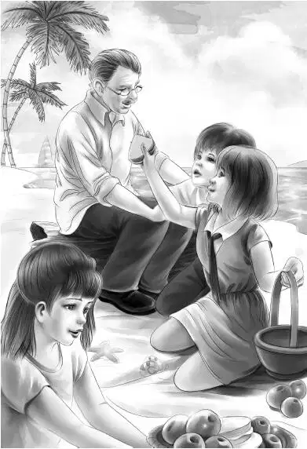

Benny went slowly back to the hotel. He looked on every side as he walked， but Mr. Willet had disappeared.
Benny did some hard thinking on that walk. He had been sure that Freddy Willet was going to do more trading. But as far as Benny could tell， the Aldens and Miss Gray were the only people who knew Freddy was on the island today. After all， he hadn’t come in his red sports car. He had come secretly in the middle of the night. Why？
One idea came to Benny. Freddy had planned to get the library books on this day while the Aldens were still busy with their school. It was just bad luck for Freddy that Benny had gone to the library to hunt for pictures.
When he reached home， Benny told the family about his adventures. Henry said， “Ben， you certainly have made a friend of Miss Gray. I thought you could. Why， you have even made her come out of her house.”
Jessie said， “We’ve been here in the yard， but we haven’t seen Mr. Willet or anyone new.”
Mr. Alden said， “It’s a mystery how two men can keep themselves out of sight. This is such a small place.”
Nothing else happened that day. Everything seemed peaceful—too peaceful， the Aldens thought.
The next day was Saturday. The first thing the Aldens saw in the morning was children fishing. The island children sat on the edge of the wharf with long fishlines. They did not need poles.
Grandfather said， “Let’s go fishing！”
“Fine，” said Jessie. “We can watch the whole island from the wharf.”
In a short time the whole family was sitting on the edge of the wharf with the children. Mr. Alden gave Hal a dollar for five fishlines. Eddie said， “I’ll show you how to fish， Mr. Alden. You let the line way down. Then pull it up just a little and let it down again. Keep the hook wiggling.”
The Aldens did as Eddie said. The island children were catching fish after fish. But the Aldens caught nothing. Suddenly Mr. Alden had a bite.
“Pull her in， mister！” cried Eddie. “Don’t rush it. Hand over hand！But keep it even-like.”
Mr. Alden pulled as well as he could through thirty feet of water， and landed a beautiful big fish on the wharf.
Benny said， “Aren’t you going to fish any more， Grandfather？”
“No. I’m afraid I’ll catch another.”
“Well， I’m not，” said Benny. “I wish I could catch one. I would eat that whole fish myself.”
Everyone was quiet. The island children went on pulling in the fish. But the Aldens still caught nothing.
All at once Grandfather said slowly， “I believe I see our strange man at last！” Something in Grandfather’s voice made the Aldens look up quickly at the cliff walk. The island children paid no attention.
“Who in the world is that？” said Jessie. “He is dressed like an Englishman.”
The stranger wore a cap that shaded his eyes. He had on dark blue shorts and a soft shirt with a scarf tucked in at the neck. His socks were red and blue and came up to his knees. He carried a walking stick.
“Maybe he’s a friend of Miss Gray’s，” said Henry. “He is coming from that way.”
Then Violet said in a very low voice， “Grandfather！Do look at him！It’s Mr. Carter！”
“It is，” said Henry softly. “Look at his walk！It’s John Carter’s walk. Now why is he here？”
Mr. Alden said， “I telephoned him about Willet， but I didn’t send for him. Maybe he began to look up Willet’s business and thinks we need help.”
Henry whispered， “He’s coming this way. Act as if you don’t know him.”
The man in shorts came down to the wharf. Benny wanted to smile， but he stopped in time.
“Hello， everybody！Fishing？” said the man， as if he had never seen the Aldens before.
“Well， sir， these children are fishing，” said Mr. Alden. “But we have caught only one.”
“I say， that’s a big one！” It was exactly as if an Englishman were speaking. Not one of the island children turned around. But they heard every word.
“You’re a stranger here， sir，” said Grandfather. “Are you staying long？”
“A week or so， don’t you know？My name is Wilder-Smith. Guest of Miss Gray’s. My mother went to college with Miss Gray. Great old friends.”
“We are the Aldens，” said Grandfather. “Henry， Jessie， Violet， and Benny.”
Mr. Wilder-Smith bowed. He knew that the island children were listening. He went on， “There’s another stranger here， Mr. Willet. Today he is going to visit the good people and look over some dusty old things. He likes old things. Bit odd， don’t you know？”
Isabelle spoke up loudly. “He isn’t odd. He’s wonderful！”
“There， now，” said Mr. Wilder-Smith， “you see！He’s wonderful. I may go with Mr. Willet on his calls.”
“Go with him？” asked Benny， surprised.
“The man invited me. Of course I don’t know anything about old things. By the way， did you know there is no post office on this island？”
“Yes， the mail has to come from Northport，” said Henry.
Mr. Wilder-Smith shook his head. “I’ll have to find some other way. I have to get my letters by fast post.”
“Maybe we can think of a way to help you，” said Benny. “We’ve got a car.”
“Right，” said Mr. Wilder-Smith. “I have important letters. Maybe you can help. But I must toddle along. Cheerio！Top-hole to meet you.”
Mr. Wilder-Smith walked back along the wharf. Not a child spoke. They went right on fishing.
“Let’s go！” said Henry. “Thanks， Eddie， for the fishing lessons.”
“OK，” said Eddie.
When the Aldens reached the sand， Jessie said， “Why do you suppose Freddy ever asked Mr. Carter to come with him？”
“Because he’s a smart man，” said Grandfather. “Freddy wants us to think he is honest. But he’ll find that John Carter is smarter than he is.”
Nobody on the wharf could hear what the Aldens said now. Benny said in a low voice， “Mr. Carter wanted to find some way to send us messages， didn’t he—talking about the post office？”
“That’s what I thought，” said Jessie.
“I know a way，” said Benny. “You know that old log on the beach that Grandfather sits on？There’s a deep hole in one end. We can put a small piece of paper in the hole any time. And so can he.”
“Good！” said Jessie. “Let’s send him our message right away. The people know that we often sit on that log. They won’t notice.”
Henry wrote it. He made it as short as he could.
Light in schoolhouse at night. Back window has no lock. Broom closet goes into secret room in chimney. Look out of Washington’s coat button.
“Now how shall we put it in the log？” asked Violet.

“I know！” said Jessie. “We’ll make some sandwiches and have a picnic on the beach. While we are eating we can hide the paper.”
The girls quickly made some cheese sandwiches. They packed the basket with many other things. Mr. Alden sat on the log. “Why don’t you hide the paper yourself， Gramps？” said Benny. “You know where the hole is.”
“Don’t watch me，” said Mr. Alden. Then in a minute he said， “It’s all done.” Not a sign of paper showed.
“I wonder how Mr. Carter will get it out？” said Benny.
“Well， that’s his lookout，” said Mr. Alden. “I wouldn’t worry about him.”